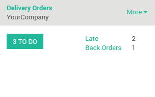

Overview
When you work in just-in-time, you don't manage stock so you directly order the product you need from your vendor.
The usual flow is:
- Create a sale order
- Purchase the product
- Receive and pay the bill
- Deliver your product
- Invoice your customer
Product configuration
In the purchases application, open the Purchase menu and click on Products. Open the product on which you want to do your purchases based on sales.
Next to Routes, tick Buy and Make to order as a procurement method. When you are generating sales order, Odoo will automatically reorder the same quantity through procurement.

Don't forget to set a vendor otherwise the rule won't be triggered.
You can also configure minimum stock rules that will trigger the purchase orders.
Note
To know how to configure a minimum stock rule, please read the document How to setup a minimum stock rule?.
Process
Sale order
To create a sale order, go to the Sales application, and create a new sale order.

After confirming it, you will see one Delivery associated with this sale order on the button on the top of it.
Click on the Delivery button to see the transfer order. The status of the outgoing shipment is Waiting Another Operation. It won't be done until the purchase order is confirmed and received.
Purchase order
The purchase order is automatically created. Go to the Purchase application . The source document is the sale order that triggered the procurement.

Note
If you make some more sales that trigger procurements to the same vendor, it will be added to the existing request for quotation. Once it is confirmed, the next procurements will create a new request for quotation.
Receipt and delivery
Go the the Inventory application. Click on # To Receive on the Receipts tile.

Select the receipt from your vendor and Validate it.

Go back to the Inventory dashboard. In the delivery order, click on # To Do. The delivery order is now ready to ship.
The status of the delivery changed from Waiting Availability to Available. Validate the transfer to confirm the delivery.